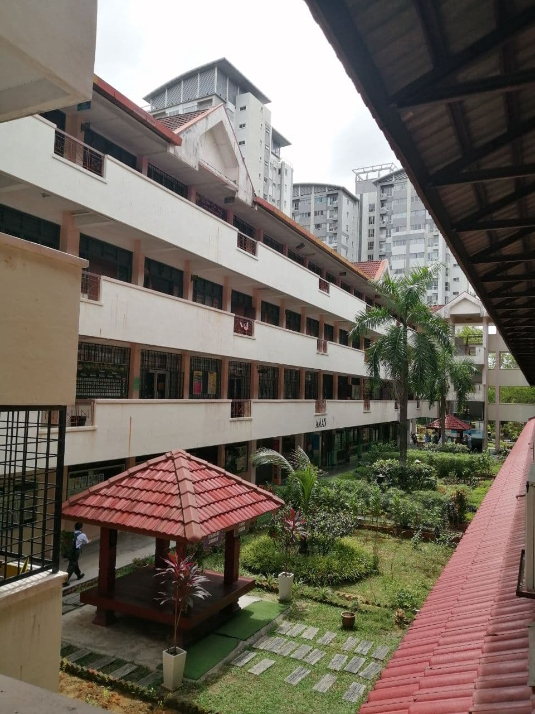
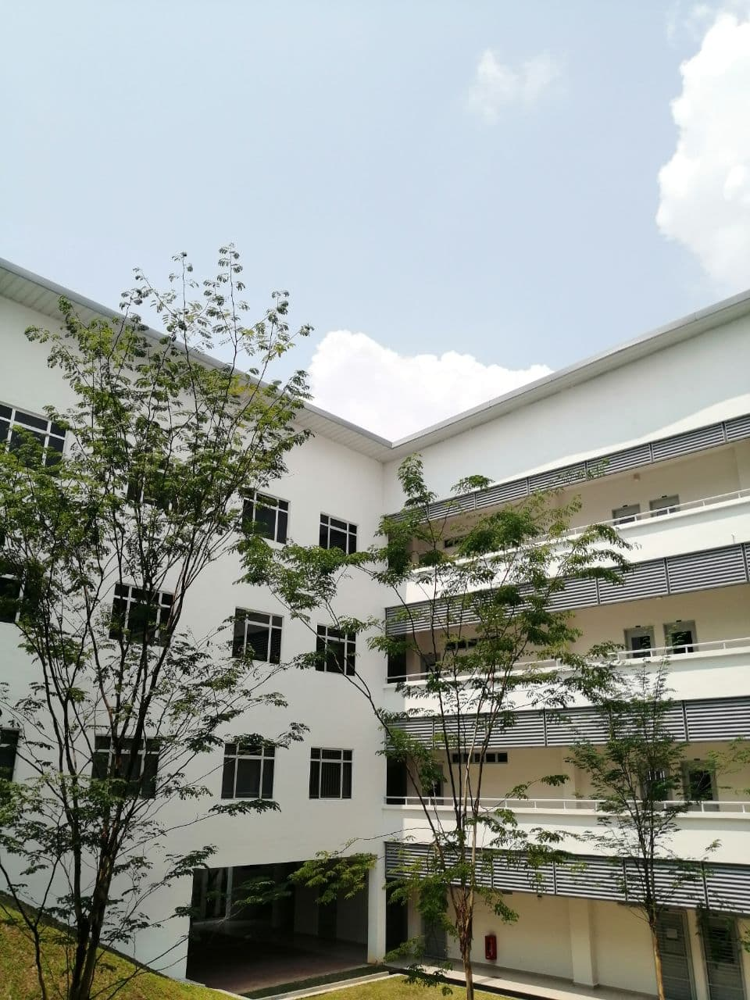
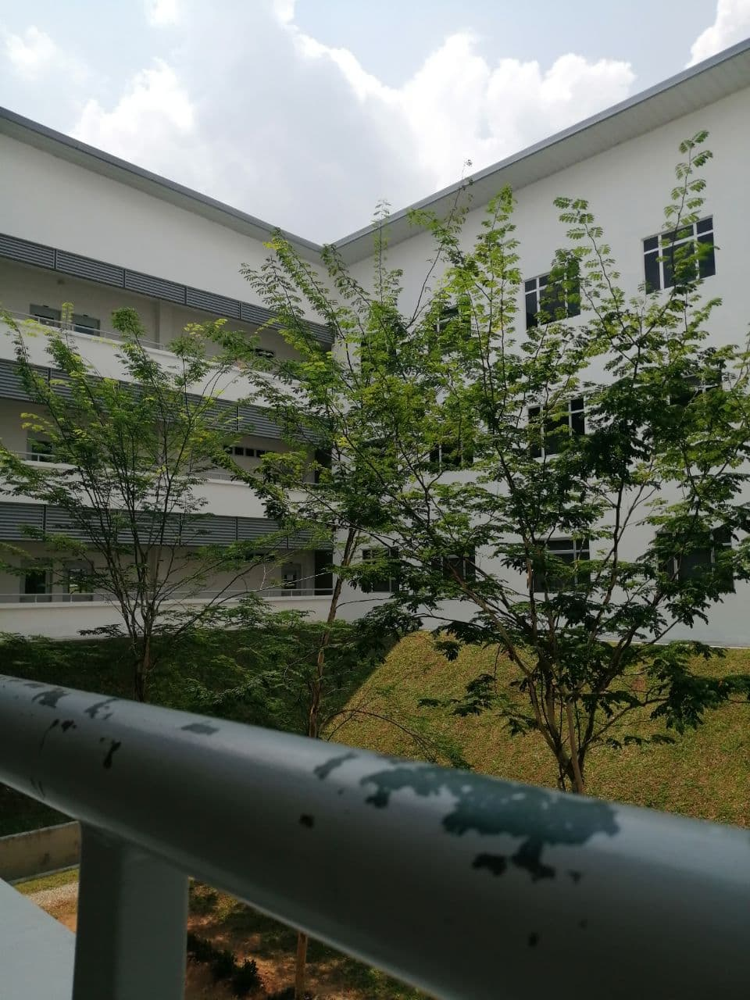

My school, SMK Seksyen 4 Kota Damansara
In terms of educational background, I was studied in SMK Seksyen 4 Kota Damansara, few meters away from my home in Petaling Jaya, Selangor during my secondary years since 2014 till 2018. It was good times to be friend with lot of friends from different classes and clubs. Interestingly, I was a librarian back then started from Form 2 to Form 5 (read: where I became the head of librarian at the time). Perhaps, my love towards library since then had accidentally brought me to take the related course now.
During Form 5, I took Science Stream class which required me to learn Biology, Chemistry and Physics. Despite the struggles in scoring A's for the subjects, I had to admit that each of the learning session for the subjects were fun and interesting. Not too mention the beloved teachers who teached us. Kudos to them! (read: Cikgu Herdawati, Cikgu Ruslia and Cikgu Sarina and other teachers as well, you know who you are). Alhamdulillah, due to efforts and prayers not only from myself but also from everyone else, I managed to get good results for my SPM (read: 6 A 3B 1C).

UiTM Rembau Campus
After done with SPM, I decided to continue my studies for Diploma in Information Management in Universiti Teknologi Mara (UiTM) Cawangan Negeri Sembilan Kampus Rembau. The course contains lots of new knowledge which I've never known. I've learned lot about the literacy skills in finding accurate information, accessing various databases to get different types of materials such as journal articles and books and most interestingly, designing posters, ebook as well as websites. There also courses that focuses on information agencies such as archives and library. All of these not only enables me to be more knowledgeable in this field but also give me reasons to decide on my career path in the future.
As IM student that currently in final year, I feel a bit of nervous yet excited to end my diploma years with the best results. Sometimes, it feel surreal to know that I literally have been studied for over 2 years since 2019. After so many ups and downs, sleepless nights and so on, this is the last time for me and my friends to show our efforts best out of best. To be honest, I just hope that each one of us will achieve dreams we've been dreaming before no matter how hard it is. May Allah ease everything for us, InsyaAllah. 🌞
 
Information Management (IM) faculty
Here are the list of course code for the final semester:
| NO | COURSE CODE | COURSE DESCRIPTION | CREDIT HOUR |
|---|---|---|---|
| 1 | ENT300 | FUNDAMENTALS OF ENTREPRENEURSHIP | 3.0 |
| 2 | IMD311 | INTRODUCTION TO WEB CONTENT MANAGEMENT AND DESIGN | 3.0 |
| 3 | IMD312 | REFERENCE AND INFORMATION SERVICES FOR INFORMATIOM AGENCIES | 3.0 |
| 4 | IMD313 | FOUNDATION OF ARCHIVES | 3.0 |
| 5 | IMD314 | EXTENSION SERVICES FOR INFORMATION AGENCIES | 3.0 |
| 6 | IMD315 | MANAGEMENT OF LIBRARIES AND RESOURCE CENTER | 3.0 |
Total Credit Unit: 18.0
Click here to see the course outline for all semesters.